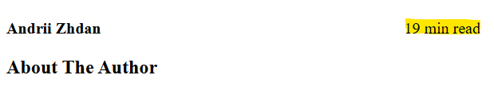
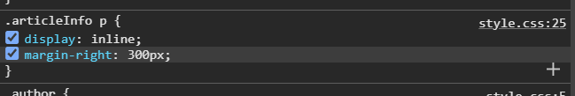
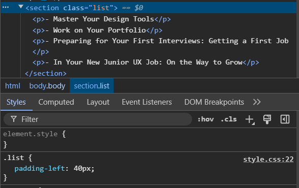

Jeg kunne ikke lide hvordan tiden til at læse artiklen stod direkte under forfatteren

Jeg kunne ikke lide hvordan tiden til at læse artiklen stod direkte under forfatteren
Derfor kiggede jeg på en artikel fra DR hvor det så således ud:

Efter en smule søgning fandt jeg frem til denne ekseptionelle løsning
vha. en smule margin
Herefter har jeg lavet en liste:
men jeg kendte endnu ikke til "li" elementet. Derfor ser koden således ud:
